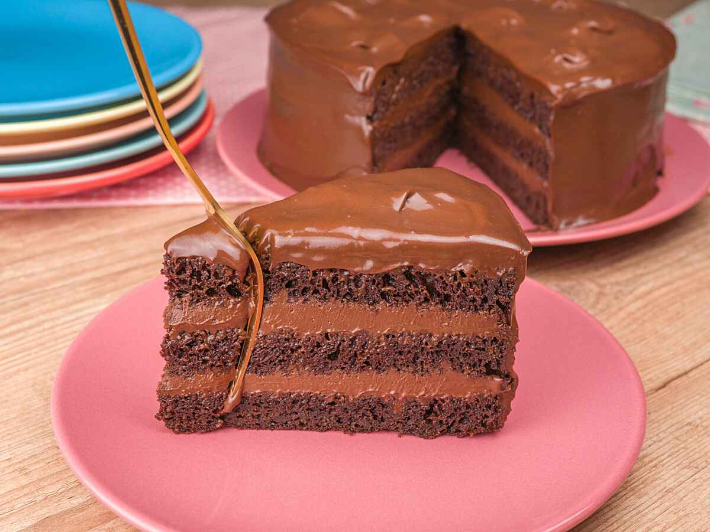
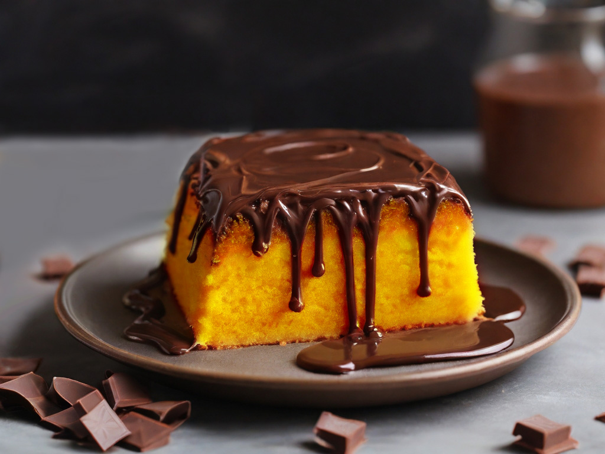
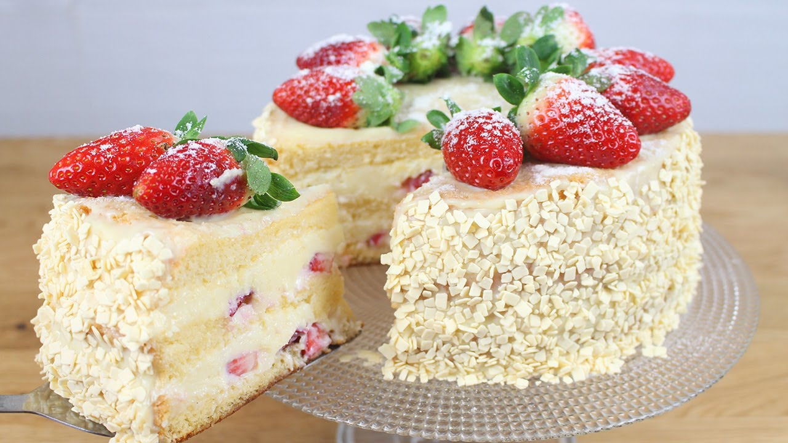
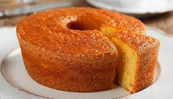
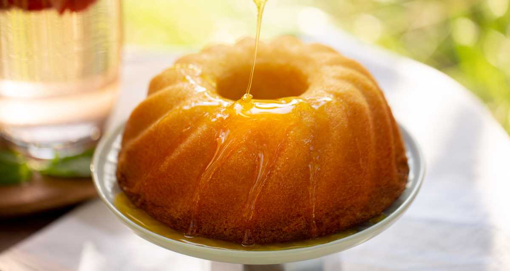

Bolo de Chocolate - Uma receita tradicional e deliciosa de bolo de chocolate.
Ingredientes
Ingredientes da cobertura
Modo de preparo
Em uma tigela, misture os ovos e o açúcar.
Adicione o óleo, o leite, o chocolate em pó e a farinha.
Acrescente a água morna.
Incorpore o fermento e mexa rapidamente.
Despeje em uma forma untada com margarina e chocolate em pó.
Asse em forno a 180°C por cerca de 30 minutos.
Modo de preparo da cobertura e finalização
Coloque todos os ingredientes em uma panela.
Leve ao fogo médio até engrossar.
Desenforme o bolo e despeje a cobertura em cima.
Sirva e aproveite! Bom apetite.

Bolo de Cenoura - Clássico bolo de cenoura com cobertura de chocolate.
Ingredientes
Ingredientes da cobertura
Modo de preparo
Reúna todos os ingredientes.
Em um liquidificador, coloque os ovos, o óleo, as cenouras e bata por 5 minutos.
Despeje em um recipiente, adicione o açúcar, misture bem e depois bata com um fouet por 1 minuto (ou até o açúcar se dissolver).
Acrescente a farinha, misture bem e bata até incorporar, em seguida o fermento e misture levemente.
Transfira para uma forma untada, enfarinhada e leve ao forno preaquecido 180 ºC por cerca de 40 minutos ou até dourar por cima e ao fazer o teste do palito, ele sair limpo.
Desenforme e reserve.
Modo de preparo da cobertura e finalização
Derreta o chocolate no micro-ondas ou em banho-maria.
Adicione o leite condensado, o creme de leite e misture até incorporar.
Leve para a geladeira por 20 minutos.
Despeje o chocolate sobre o bolo e sirva.

Bolo de Leite Ninho com Morango - Um bolo cremoso e delicioso, perfeito para ocasiões especiais.
Ingredientes
Ingredientes do recheio e cobertura
Modo de preparo
Pré-aqueça o forno a 180°C. Unte e enfarinhe uma forma de 25 cm.
No liquidificador, bata os ovos, o açúcar, o óleo e o leite até ficar homogêneo.
Despeje a mistura em uma tigela e adicione a farinha de trigo aos poucos, mexendo bem.
Incorpore o fermento delicadamente e despeje a massa na forma preparada.
Asse por cerca de 35 a 40 minutos, ou até que um palito inserido no centro saia limpo. Deixe esfriar.
Modo de preparo do recheio e cobertura
Na batedeira, bata o leite condensado, o creme de leite, o leite em pó e a manteiga até obter um creme liso e homogêneo.
Corte o bolo ao meio e espalhe uma camada generosa do creme.
Distribua os morangos picados sobre o creme e cubra com a outra metade do bolo.
Espalhe o restante do creme sobre todo o bolo, cobrindo bem.
Decore com morangos inteiros e leve à geladeira por pelo menos 2 horas antes de servir.

Bolo de Cenoura - Uma receita tradicional e deliciosa de bolo de fubá.
Ingredientes
Modo de preparo
Pré-aqueça o forno a 180ºC. Unte uma forma de 25 cm com manteiga e polvilhe açúcar, retirando o excesso.
Quebre os ovos individualmente em um recipiente e transfira para o liquidificador. Adicione óleo, açúcar e leite, batendo por cerca de 5 minutos até obter uma mistura homogênea.
Peneire o fubá e a farinha em uma tigela, misture com um fouet. Aos poucos, adicione a mistura do liquidificador, mexendo delicadamente até a massa ficar lisa e homogênea.
Adicione o fermento e o sal à massa, misturando delicadamente até incorporar. Despeje na forma untada e nivele com uma colher ou espátula, se necessário.
Asse no forno preaquecido por 30 a 40 minutos ou até que um palito inserido no bolo saia limpo. Caso necessário, deixe assar por mais alguns minutos até que esteja completamente cozido.
Retire do forno e deixe amornar por 10 a 15 minutos. Desenforme.

Bolo de Laranja - Um bolo fofo e cítrico perfeito para o café da tarde.
Ingredientes
Ingredientes da calda
Modo de preparo
No liquidificador, bata a laranja com os ovos, o açúcar e o óleo até ficar homogêneo.
Despeje a mistura em uma tigela e adicione a farinha de trigo aos poucos, misturando bem.
Adicione o fermento e misture delicadamente.
Coloque a massa em uma forma untada e enfarinhada.
Asse em forno preaquecido a 180°C por cerca de 35 minutos ou até dourar.
Modo de preparo da calda
Em uma panela, misture o suco de laranja e o açúcar.
Leve ao fogo médio, mexendo até dissolver o açúcar.
Deixe ferver por cerca de 5 minutos até formar uma calda leve.